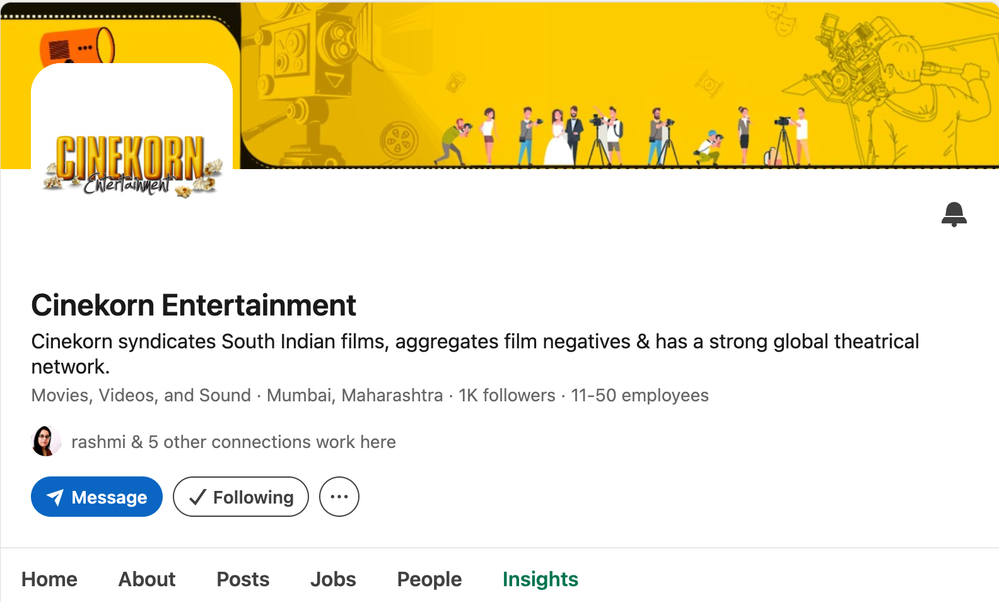

Case 06 · Cinekorn Entertainment
CINEKORN COMPANY LINKEDIN
Industry editorial cadence on the company page. Increased activity with zero paid spend.
Context
THE COMPANY PAGE NEEDED A REASON TO PUBLISH
Company announcements alone are not a content system. The page needed a steady reason to show up in the feed beyond internal updates.
Problem
ANNOUNCEMENTS ALONE ARE NOT A SYSTEM
Without a broader editorial angle, publishing slowed and the page stayed quiet between official news. Frequency was about one post every 8.1 days before the operating period.
Strategy
EXPLAIN THE BUSINESS OF ENTERTAINMENT
Instead of depending only on company announcements, the page used Cinekorn’s position inside entertainment to explain industry developments. Content was designed around information that could make someone stop and understand a business move, not only react to a logo post.
Execution
EDITORIAL CADENCE FROM APRIL 13, 2026
Managed the company page from April 13, 2026. Raised publishing frequency to about one post every 2.4 days. Focused on industry context and business explanation rather than only internal announcements. Zero paid spend across the comparison.
Evidence
PAGE ACTIVITY SURFACES
Company page analytics and content surface used to judge cadence and topic mix. Zero paid spend across the comparison window.


Results
IMPRESSIONS, CLICKS, REACTIONS
The comparison windows were 211 days before and 154 days after the operating period. Total impressions rose from 6,263 to 17,289, but the unequal windows make totals an unfair headline. Average daily impressions increased from about 29.7 to 112.3, a 278% increase. Average daily clicks rose from 5.8 to 18.4 (+216%), average daily reactions from 0.45 to 3.41 (+665%), and engagement rate from 1.56% to 3.16% (+1.60 percentage points). Publishing frequency was about 3.4×, with zero paid spend.
Takeaway
WHAT THIS SHOWED
Company content does not always need to talk about the company. Sometimes the strongest way to establish presence is to demonstrate what the company understands. For Cinekorn, that meant building content around the business of entertainment rather than only publishing updates about the business.